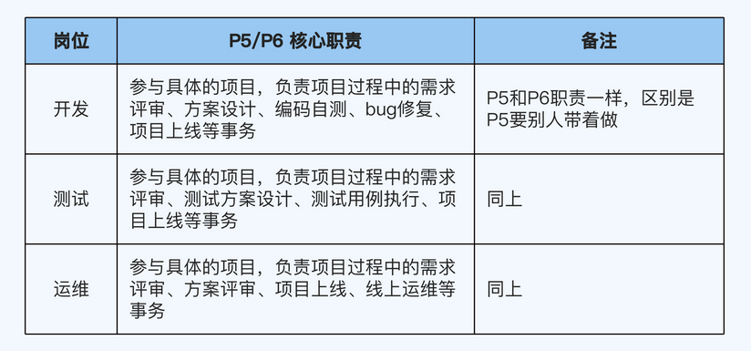
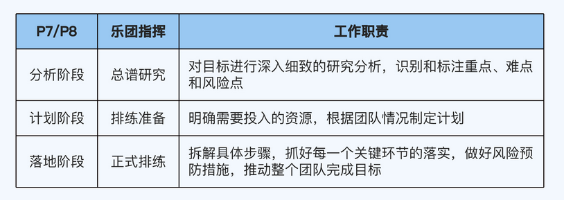
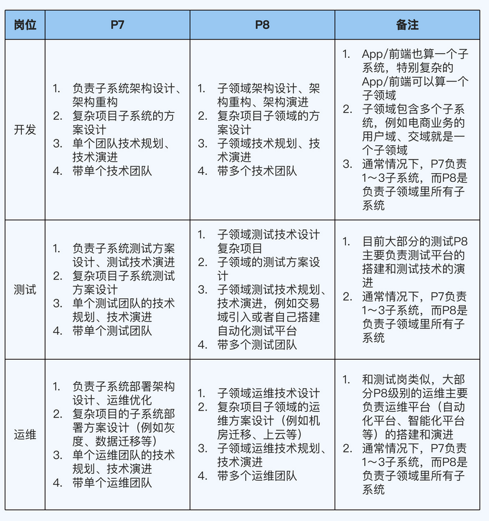
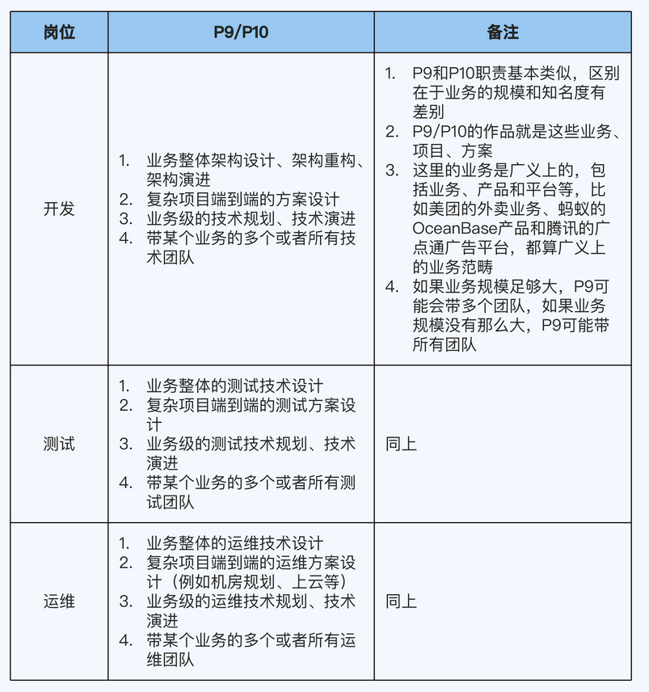

06、职级档次：你现在应该具备的核心能力是什么？
P5/P6：专业工匠P5/P6
核心能力是完成任务。P5 和 P6 的职责一样，比较简单，不需要太多解读。这两个级别的区别是，P5 需要在别人的指导下完成工作，而 P6 可以独立完成工作。其实只要有意愿在技术领域发展，基本上每个人都能达到 P6 的水平。
P5/P6 的核心职责如下表所示。
P7/P8：乐团指挥P7/P8
核心能力是指挥团队
为什么我要这么类比呢？因为 P7/P8 的职责和乐团指挥的职责非常相似。
乐团指挥的核心工作职责，具体可以分为三个阶段：
第一阶段是总谱研究，对总谱进行深入细致的研究分析，识别和标注演奏的重点、难点和风险点。
第二阶段是排练准备，明确演奏需要的人手和乐器，根据乐团情况制定排练计划。
第三阶段是正式排练，拆解具体排练步骤（比如个体练习、分声部练习和全体排练等），抓好每一个关键环节的落实，做好风险预防措施，推动整个乐团完成演奏。
P7/P8 的任务和乐团指挥非常像，也可以分为三个阶段，跟乐团指挥的三个阶段正好一一对应。你只要把总谱换成团队的工作目标，把人手和乐器换成资源，把演奏排练换成工作目标落地就行了。首先是分析阶段，对应乐团指挥的总谱研究；然后是计划阶段，对应排练准备；最后是落地阶段，对应正式排练。我把这个对应关系总结在了下面的表格里。
P7/P8 的核心职责如下表所示
P9/P10：电影导演P9/P10
核心能力是导演作品
P9/P10 的工作跟电影导演很像，具体表现在三个方面：
第一，他们的工作都具有一定的规模。比如说你只是拍一段 60 秒的 vlog，还算不上电影导演；真正的电影导演拍出来的是几十分钟以上，剧本、服饰、化妆、道具、表演、运镜和剪辑都非常成熟的作品。同样地，P5～P8 这几个级别的工作都会产出一些成果，但这些成果在规模上还不足以跟 P9/P10 这个级别相比。
第二，他们都是总决策者。在一个剧组里，一般情况下导演就是老大，有绝对的话语权。同样地，虽然 P6 可以指导别人，P7/P8 可以带团队，但工作仍然会在很大程度上受到制约，关键的目标制定、资源整合和关键决策的工作，还是得由 P9/P10 来完成。具体一点说，P9/P10 需要制定有挑战的业务目标；整合不同的团队，包括多个技术团队（比如 Android、iOS、前端、Java 后端、测试、运维等）和多个业务团队（比如腾讯的广告平台的某个业务，可能涉及 QQ、微信和应用宝等多个业务团队）；做出关键决策（例如要做什么、不做什么、先做什么和后做什么等）。
第三，他们都是总负责人。一部电影作品会打上导演的烙印，甚至呈现出强烈的导演个人风格。电影拍得不好，观众第一个骂的就是导演；拍得好，赞美和荣誉也首先给到导演身上。同样地，P9/P10 的水平、眼界、价值观和做事风格，直接决定了一条业务线的质量，因为这些因素会体现在工作过程中的各种决策里面，决定了最终的呈现效果。另外，导演往往有自己擅长的题材，比如文艺片、喜剧片；而 P9/P10 一般也都聚焦于某个业务或者专业领域，比如电商业务、出行业务、安全领域、算法领域，很少有跨领域样样精通的人才。
P9 和 P10 的核心差异在于成果质量。我还是拿电影导演来类比，P9 是成熟的导演，能拍出 7 分以上的作品（基本合格）；P10 是成名的导演，能拍出 8 分以上的作品（比较优质）。虽然对于 P9/P10 的工作成果，并没有一个通用的打分机制，但是公司能通过一些硬指标来衡量，最典型的就是直接看业务结果。如果你负责的业务结果实现了既定的业务目标，那么你就是成熟的导演，可以胜任 P9；如果你负责的业务结果按照某个标准（用户量、收入和权威机构的测评等），进入了业界前列，有一定的名气和影响力，那么你就是成名的导演，可以胜任 P10。
P9/P10 的核心职责如下表所示。
